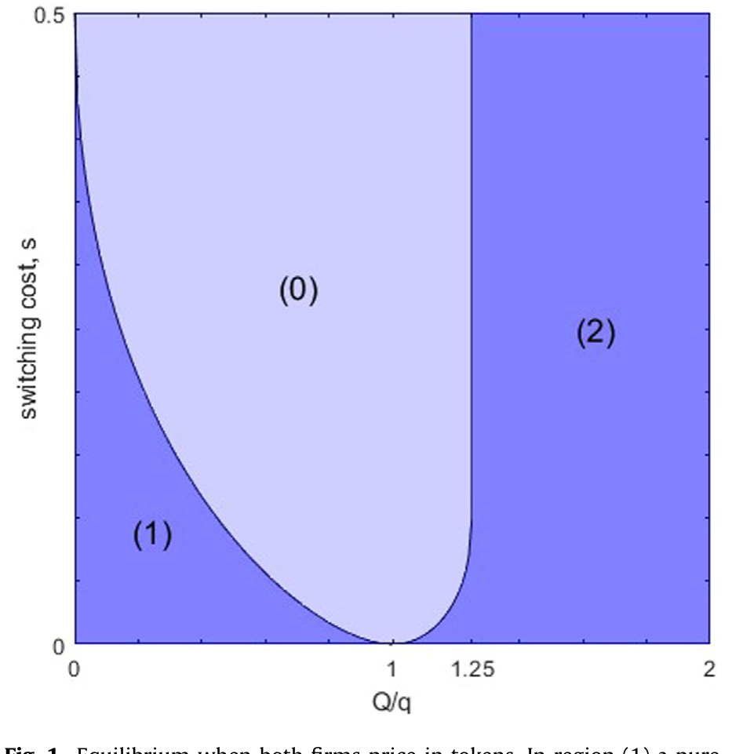
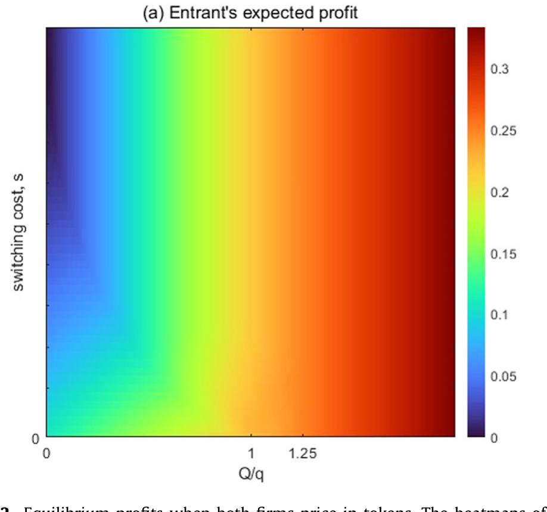
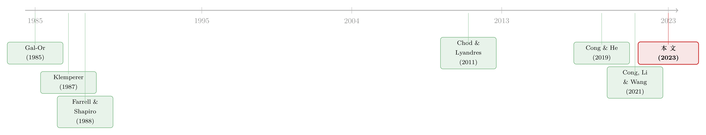

把价签换成代币，弱者如何赢下价格战
本文读的是 Chod & Lyandres (2023, Journal of Financial Economics)：在一个带转换成本的双寡头价格竞争里，一家公司只要把自己产品的标价从法币换成自己的加密代币，就能凭空获得一个「第二动者优势」，抬高自己的均衡利润；若再用一纸智能合约把代币供给（即产量）锁死成对手价格的函数，它甚至可以把两家公司的全部剩余尽数收入囊中。
1 一个弱者的难题
先讲一个我们都熟悉的故事。
市场上有一家在位的老牌厂商，比如云存储里的 Dropbox；它先来一步，已经攒下了一大批用户。这些用户把数据、应用、工作流都搬上了它的平台，想换家供应商，迁移成本不低——这就是产业组织里讲了几十年的 转换成本 (switching cost)。然后，一个新进入者来了，比如把存储服务做成去中心化网络的 Filecoin。
在价格竞争里，谁更有底气？直觉告诉我们是在位者。它有一群「被黏住」的老客户：哪怕新进入者报价更低，老客户要跳槽也得先付一笔转换成本，所以在位者可以放心地把价格抬到「转换成本」这条护城河的高度，安稳收租。新进入者呢？它面对的只是那些还没被任何人锁定的「自由人」，要从零开始抢，处境天然被动。
于是一个自然的问题是：身为后来的弱者，进入者有没有办法翻盘？
传统答案里最常见的一招，是「价格匹配承诺」——「你比我便宜，我就照着降」。大零售商卖标准品时常这么干，它本质上是在制造一个 第二动者优势 (second-mover advantage)：让对手先出价，我再据此调整，永远不吃亏。可这招对差异化的产品和服务几乎没用：一份云存储、一段算力，价格要在每一个客户、每一笔交易上一一匹配，合同会复杂到无法签、无法执行。
这篇论文给出的答案，乍听之下近乎荒诞：进入者什么都不用承诺，只要把自己的标价从美元改成自己发行的代币就行。
2 核心直觉：把定价权「外包」给代币市场
为什么换一种计价单位，竞争格局就变了？
关键在于一句话：当你用代币报价时，这个价格折算成法币是多少，取决于代币本身的价值，而代币的价值是在代币市场上由供求均衡内生决定的。
换句话说，一家用法币定价的公司，相当于在博弈一开始就把法币价格钉死了；而一家用代币定价的公司，只是钉死了「以代币计的价格」，至于它折成多少美元，要等代币市场清算之后才见分晓——而代币市场清算，是在大家都看清了竞争对手的法币报价之后才发生的。
这就等于把法币等价价格的形成时点，往后推迟到了代币市场里。推迟，意味着可以「看人下菜」；意味着这家公司在事实上变成了那个总能后出手、总能把价格调到恰好竞争的「第二动者」。
论文把这句话坐实成了一个干净的结论：如果在位者用法币定价、进入者用代币定价，那么进入者永远赢下对「自由客户」（unattached consumers）的价格竞争。在位者发现自己根本抢不到任何新客户，于是它的最优策略退化成一件事——守住手里那批老客户就好。可一旦在位者收缩到只守老客户，它的定价就不再咄咄逼人，这反过来又让进入者过得更舒服。一个看似中性的「换计价单位」动作，把整个竞争的张力卸掉了一半，而卸掉的那一半，恰好落进了进入者的口袋。
这正是这篇论文最想讲透的「一个核心」：代币化（tokenization）不只是个融资噱头。过去的文献几乎都在讲「ICO 阶段发币融资有什么好处」，而这篇论文把舞台挪到了产品市场竞争阶段——发币定价本身，就是一件竞争武器。
3 模型：把故事写成方程
这是一篇彻头彻尾的理论论文，值得把骨架一根根摆出来。
时间与玩家。 两期。第一期，在位者 (incumbent) 是独家垄断者；第二期，进入者 (entrant) 零成本进场，两家以 伯特兰 (Bertrand) 方式打价格战。两家都没有固定成本、没有边际成本，期间贴现率归一化为零。
第一期需求。 第一期消费者质量归一化为 1，估值在 $[0,1]$ 上均匀分布。于是在位者的需求是
$$q = 1 - p_1, \qquad p_1 \in [0,1].$$
这里 \(q\) 既是第一期销量，也将成为第二期「被黏住的老客户」的规模。
第二期的两类人。 第二期消费者总质量是 \(1+g\)，其中 \(g\) 是需求增长率——它是随机的，在第一期还看不到。市场上有两类人：买过在位者产品的「老客户」（attached，质量 \(q\)），和没买过的「自由人」（unattached，质量 \(Q\)）。老客户若想转投进入者，要付转换成本 \(s>0\)。自由人的规模是
$$Q = 1 + g - q = p_1 + g.$$
这个等式，是整篇论文战略逻辑的枢纽，值得拆开来看：
最后那个等号道出了一个张力：在位者第一期定价越低（\(p_1\) 小），它黏住的老客户 \(q\) 就越多，但留给第二期的自由人 \(Q=p_1+g\) 就越少。在位者在「现在多卖一点」和「未来留一片可争的市场」之间，被迫取舍。这正是它第一期「激进降价、广建客户基」这一策略的根源。
第二期的需求与利润。 两家分别报出第二期法币价格 \(p_e\)（进入者）和 \(p_i\)（在位者）。考虑到老客户头上压着 \(s\)，需求函数是分段的：
$$ D_i(p_e,p_i)= \begin{cases} (q+Q)(1-p_i) & \text{if } p_i < p_e,\\ q\,(1-p_i) & \text{if } p_e \le p_i \le p_e+s,\\ 0 & \text{if } p_e+s < p_i, \end{cases} $$
$$ D_e(p_e,p_i)= \begin{cases} 0 & \text{if } p_i < p_e,\\ Q\,(1-p_e) & \text{if } p_e \le p_i \le p_e+s,\\ (q+Q)(1-p_e) & \text{if } p_e+s < p_i. \end{cases} $$
读法很直白：进入者若报价高于在位者，老客户和自由人全归在位者；在位者若报价高出「对手价 \(+s\)」，全市场归进入者；中间地带，则在位者守住老客户、进入者拿走自由人。两家的利润照例是价乘量：
$$\Pi_e(p_e,p_i)=p_e\,D_e(p_e,p_i),\qquad \Pi_i(p_e,p_i)=p_i\,D_i(p_e,p_i).$$
4 法币基准：一场注定混乱的价格战
在两家都用法币定价的基准里，会发生什么？
论文的引理 1（Lemma 1）给出一个略带意外的结论：不存在纯策略纳什均衡。 直觉是经典的伯特兰式「想报一个比对手略低一丝的价」的悖论——只要存在转换成本，价格就停不下来，也定不住。这一点与 Shilony (1977)、Varian (1980)、Padilla (1992) 笔下「混合定价」的传统一脉相承：均衡只能是混合策略，价格变成一张随机的抽签表。
虽然完整的混合策略难以解析刻画，论文却能给进入者的均衡利润框定上界。当转换成本高（或者老客户太少）时，进入者干脆放弃去争那些被锁定的人，它能拿到的至多是从自由人身上榨出的垄断租
$$\mathbb{E}[\Pi_e^*] < \frac{Q}{4}.$$
当转换成本低时，进入者有强烈动机去抢老客户，逼得在位者不得不降价应战，结果进入者反而更不好过，利润上界还要更低。记住这个 \(Q/4\)——它是进入者在「法币世界」里的天花板。后面我们会看到，代币与智能合约，正是把这块天花板一路顶穿的过程。
5 真正关键的一步：用智能合约把产量「焊死」
到这里，代币定价已经帮进入者赢下了所有自由客户。但故事还有更狠的一招。
但真正关键的一步在于：进入者还能用智能合约，对「自己卖多少代币」（也就是产量）做出可信承诺，而且这个承诺可以挂在对手的价格上。
为什么这一步如此重要？回到第 3 节那个枢纽等式：在位者第一期之所以要激进降价、广建客户基，是为了让第二期的自由人池 \(Q=p_1+g\) 变小，把市场提前「掏空」给自己。这给两家都带来损失——在位者第一期把利润让在了桌上，进入者第二期只剩一小撮自由人可抢。
论文提出的智能合约这样设计：进入者承诺把未来以代币计的产量（供给量），写成在位者价格的一个函数。这等价于承诺「我只卖这么多，多出来的自由客户我让给你在位者」。一旦进入者可信地让出一部分自由人，在位者就失去了第一期拼命建客户基的动机——因为它不必再担心未来无市场可做。两家于是都松了一口气：在位者第一期不再贱卖，进入者第二期也不再面对一个被掏空的市场。
论文证明：当进入者用代币定价时，它可以部署一个智能合约，使两家公司两期的总期望利润最大化，并把这块做大的蛋糕全部留给自己。\(Q/4\) 的天花板，被彻底顶穿了。
这种「依对手价格而定的产量承诺」，用传统手段几乎做不到。口头承诺「对手降价我就限产」事后没有激励兼容、无法执行；靠物理产能限产对数字产品又无效；更别说还要让限产「挂在对手价格上」。智能合约的不可篡改 (immutability) 与自动执行，加上像 Chainlink 这样的预言机 (oracle) 把链下的对手价格喂进合约，才让这种「有条件的可信承诺」第一次成为可能。关于「承诺去和某一方交易反而能改善市场」的同源思想，可参见《承诺去交易：为什么「先卖给中间商」反而能治好柠檬市场》。
6 反转：要是在位者也学会发币呢？
读到这里，一个聪明的反问会冒出来：既然代币定价对进入者这么香，在位者干嘛不也发个币？
于是论文在第 6、7 节让两家都内生地选择计价方式（代币 vs 法币）。结论是：均衡里进入者总是选代币定价，而在位者会在代币与法币之间摇摆，取决于转换成本 \(s\) 和需求增长 \(g\)。
当两家都用代币定价时，第二期的价格战会神奇地变形成一场数量竞争（库诺，Cournot）：在位者借此重新夺回了对新客户的接触权，在库诺价格下拿下整个市场的三分之一。论文进一步指出，在位者从「改用代币定价」中获益最大的情形，是转换成本低、需求增长高——这时若还守着法币，在位者就只剩一群老客户和薄薄一层利润，错失了汹涌而来的新需求。
下面这两张图把两家都用代币定价时的均衡，画在了 \((s,g)\) 的参数平面上。

Figure 1: Equilibrium when both firms price in tokens. In region (1) a pure-

Figure 2: Equilibrium profits when both firms price in tokens. The heatmaps of
有意思的是，论文坦承：现实中我们还没看到在位者真的改用代币定价。一个合理的解释是，适合区块链的行业，其需求增长还没大到足以让成熟厂商动用这一招。理论先行，现实在后——这也是这篇论文「primarily normative（主要是规范性的）」自我定位的诚实之处。
7 文献脉络
把这篇论文放回它生长的土壤里，它其实站在三条河流的交汇处。
第一条河，是转换成本下的寡头竞争。 从 Klemperer (1987) 系统刻画「消费者转换成本」开始，到 Farrell & Shapiro (1988) 的动态竞争、Beggs & Klemperer (1992) 的多期模型，再到 Farrell & Klemperer (2007) 在《产业组织手册》里的集大成式综述，这条线告诉我们：锁定（lock-in）如何塑造价格、塑造在位者的优势。而「第二动者优势」这一支，则可上溯到 Gal-Or (1985)。本文的贡献，是给这条老河注入了一个全新的水源——当公司可以用代币定价、用智能合约承诺时，均衡的样子会变。
第二条河，是用「融资」做产品市场承诺。 Brander & Lewis (1986)、Titman (1984) 讲发债如何承诺产出策略，Bolton & Scharfstein (1990) 讲掠夺，Chod & Lyandres (2011) 讲战略性 IPO。本文的进入者承诺机制，不靠融资，而靠区块链的不可篡改性——这是对这条河的一次别开生面的改道。
第三条河，是加密代币与智能合约的经济学。 早期文献几乎都聚焦「ICO 融资阶段」：Chod & Lyandres (2021) 的 ICO 理论、Cong, Li & Wang (2021) 的 tokenomics、Sockin & Xiong (2020) 的加密货币模型。智能合约一侧，则有 Cong & He (2019) 论智能合约如何在「降低信息不对称」与「助长合谋」之间权衡，以及 Holden & Malani (2021) 论智能合约作为可信承诺工具。本文恰好踩在两支的接缝上：它把代币从「融资工具」一路用到了「产品市场竞争工具」。（关于区块链上「承诺」与「博弈」如何被代码重塑，也可对照《暗黑森林里的「过路费」：抢跑、MEV 与区块链上那场没谈拢的分赃》与《谁来给账本盖章？——去中心化记账，到底什么时候才划算》。）

8 评论与延伸（Q&A + 研究方向）
(a) 几个可能的疑问
Q：代币定价的「第二动者优势」，和零售商常用的「价格匹配承诺」到底差在哪？
差在可执行性。价格匹配承诺要在每个客户、每笔交易上对差异化产品逐一匹配，合同复杂、事后难执行；而代币定价下的「匹配」是代币市场均衡的自然产物，它自动反映产品差异、不必和单个消费者打交道，也不受事后激励不兼容之累。换言之，前者是要靠合约费力维持的承诺，后者是市场机制免费送上的结构。
Q：为什么法币基准下连纯策略均衡都不存在？
因为有转换成本的伯特兰竞争里，每家都想报「比对手略低一丝」的价去抢自由人，价格于是停不下来、也定不住——这是 Shilony (1977)、Varian (1980)、Padilla (1992) 早就揭示的「混合定价」现象。均衡只能是一张随机化的报价分布，论文也正是在这个混合均衡里框出了进入者利润的上界 \(Q/4\)。
Q：智能合约的承诺凭什么可信，传统承诺为什么不行？
因为它把「不可篡改 + 自动执行 + 预言机喂数据」三件事焊在了一起。传统的「对手降价我就限产」事后没有激励兼容、无法执行；靠物理产能限产对数字产品又失效。智能合约让产量可以写成对手价格的任意函数，且一经部署不可反悔，这才使「有条件的产量承诺」第一次变得可信。
Q：进入者拿走「全部剩余」，难道不剥削消费者吗？
要分清「剩余在两家公司间如何分配」与「社会总剩余」。论文里那份让总利润最大化的智能合约，同时缓解了在位者第一期过度降价、第二期市场被掏空两重扭曲——它把两期的总蛋糕做大了，只是这块多出来的蛋糕被进入者独吞。对消费者整体而言，结果未必更差，关键看分配。
Q：既然代币定价对进入者这么有利，现实里为什么几乎看不到？
论文自己也承认这是一个开放的现实张力。它的猜测是：适合区块链化的行业，其需求增长 \(g\) 还没大到足以让在位者愿意改用代币定价；而进入者一侧的真实案例（Filecoin、iExec 的 RLC、Decentraland）虽已存在，仍「few and far between」。这套理论目前主要是规范性的，等优势被充分认识后才会有更多采用。
Q：结论严重依赖「代币市场无摩擦」，可现实中代币价格剧烈波动，结论还成立吗？
这是模型最脆弱的假设之一。论文里代币价值是无摩擦的均衡产物，第二动者优势才得以干净地浮现。一旦代币本身带着巨大波动率和流动性折价，进入者「把定价权外包给代币市场」就要承担额外风险，优势可能被侵蚀甚至反转。这恰恰是最值得后续工作去打开的口子。
(b) 几个可能的研究问题与提案
-
把代币波动率写进模型。 【经济故事】现实中代币 7×24 小时交易、价格剧烈波动，「外包定价权」其实附带了一份风险敞口；当波动率足够高，第二动者优势可能被风险溢价吃掉。【可行性】高——纯理论扩展，在现有 setup 上给代币价值加一个噪声项或流动性折价，求新的均衡比较静态即可，无需数据。
-
实证检验「代币定价 → 进入与份额」。 【经济故事】论文是规范性的，但 Filecoin/Storj/Sia、iExec/AWS 这类「代币计价平台 vs 法币平台」正面交锋，提供了天然对照。【可行性】中——可手工构建代币计价平台的样本，用进入时点、市场份额、价格做事件研究，难点在于样本稀少且高度自选择，识别要非常小心。
-
稳定币计价的信用市场里的承诺机制。 【经济故事】把本文「代币定价 + 智能合约承诺」的逻辑搬到借贷/信用市场：若一家放贷平台用稳定币计价、用智能合约把放款量焊成对手利率的函数，能否复制出对在位银行的「第二动者优势」？【可行性】低-中——理论上可做，但需要把违约、抵押、流动性等信用市场要素一并引入，模型会复杂得多，且现实数据（链上借贷协议）噪声极大。
-
在位者「先发制人」的发币时点博弈。 【经济故事】本文里在位者被动选择计价方式，但若它能在第一期就抢先发币，把先动优势和代币的后动优势叠加，均衡会怎样重排？【可行性】高——在现有两期框架里把「计价方式选择」前移一期即可，是一个干净的理论延伸。
我的判断
这篇论文最漂亮的地方，是把一个看似纯技术的细节——「用什么单位标价」——翻译成了一个有真实战略后果的承诺装置，并且把它干净地嵌进了转换成本这条经典文献里。「代币定价 = 把价格形成推迟到代币市场 = 事实上的第二动者优势」，这一句话的洞见，足以让人重新打量自己钱包里那些「native token」。它也诚实地指出，发币的好处不必止于 ICO 融资阶段——这对监管讨论很有含义：即便security token 在融资端被卡死，utility token 在竞争端依然可能有用。
但对识别（这里是对理论假设）的担忧也很实在。其一，整套第二动者优势建立在代币市场无摩擦、价值是干净均衡产物之上；现实中代币的剧烈波动与流动性折价，很可能是优势的「隐性税」，论文没有给它定价。其二，消费者被设成近视的、估值跨期独立，这两条「为可解性而生」的假设，恰恰决定了老客户基的规模，一旦放松，承诺机制的力度未必还在。其三，这是一篇 normative 的论文，最关键的经验事实——「谁在用代币定价、效果如何」——目前还几乎是空的。
我最想看到的后续，是有人把代币波动率真正写进这个模型，看看那个优雅的 \(Q/4 \to\) 全剩余的跃迁，在一个会乱跳的代币价格面前，还剩下多少。
参考文献
Brander, J.A., Lewis, T.R. (1986). Oligopoly and financial structure: the limited liability effect. American Economic Review 76(5), 956–970.
Chod, J., Lyandres, E. (2011). Strategic IPOs and product market competition. Journal of Financial Economics 100(1), 45–67.
Chod, J., Lyandres, E. (2021). A theory of ICOs: diversification, agency, and information asymmetry. Management Science 67(10), 5969–6627.
Chod, J., Lyandres, E. (2023). Product market competition with crypto tokens and smart contracts. Journal of Financial Economics 149, 73–91.
Cong, L.W., He, Z. (2019). Blockchain disruption and smart contracts. Review of Financial Studies 32(5), 1754–1797.
Cong, L.W., Li, Y., Wang, N. (2021). Tokenomics: dynamic adoption and valuation. Review of Financial Studies 34(3), 1105–1155.
Farrell, J., Klemperer, P. (2007). Coordination and lock-in: competition with switching costs and network effects. Handbook of Industrial Organization 3, 1967–2072.
Farrell, J., Shapiro, C. (1988). Dynamic competition with switching costs. RAND Journal of Economics 19(1), 123–137.
Gal-Or, E. (1985). First mover and second mover advantages. International Economic Review 26(3), 649–653.
Holden, R.T., Malani, A. (2021). Can Blockchain Solve the Hold-up Problem in Contracts? Cambridge University Press.
Klemperer, P. (1987). Markets with consumer switching costs. Quarterly Journal of Economics 102(2), 375–394.
Padilla, A.J. (1992). Mixed pricing in oligopoly with consumer switching costs. International Journal of Industrial Organization 10(3), 393–411.
Shilony, Y. (1977). Mixed pricing in oligopoly. Journal of Economic Theory 14(2), 373–388.
Varian, H.R. (1980). A model of sales. American Economic Review 70(4), 651–659.
Yermack, D. (2017). Corporate governance and blockchains. Review of Finance 21(1), 7–31.